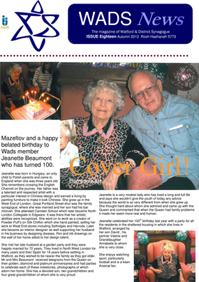

Wads News is the twice-yearly magazine from Watford & District
Synagogue. It is printed in time for the Jewish festivals Passover
(in Springtime) and Rosh Hashanah (in Autumn).
If
you would like information about advertising in the magazine or
you would like to send an article then please contact the Editor.
Click on the front cover below to download Wads News Rosh
Hashanah 2012edition.(PDF 5.5mb)
